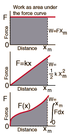
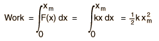
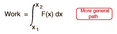

|
 |
The basic work relationship W=Fx is a special case which applies only to constant force along a straight line. That relationship gives the area of the rectangle shown, where the force F is ploted as a function of distance. In the more general case of a force which changes with distance, the work may still be calculated as the area under the curve. For example, for the work done to stretch a spring, the area under the curve can be readily determined as the area of the triangle. The power of calculus can also be applied since the integral of the force over the distance range is equal to the area under the force curve:

For any function of x, the work may be calculated as the area under the curve by
performing the integral

|